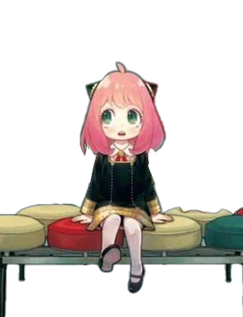
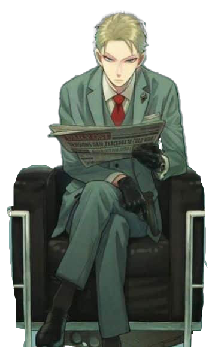
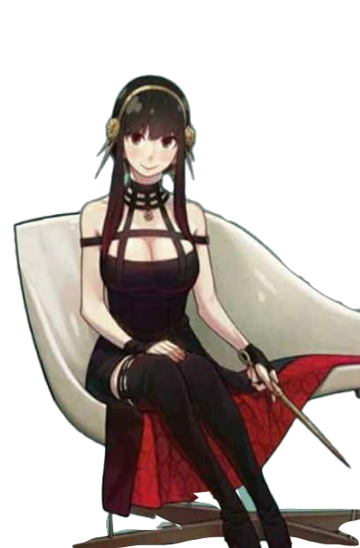

-
ANYA FORGER
TELEPATA
Descrição
Anteriormente conhecida como "Cobaia 007", é uma criança fugitiva de um experimento subterrâneo que acidentalmente deu a ela o poder de ler os pensamentos das pessoas. Após sua fuga, ela se mudou de um lugar para outro para se abrigar, incluindo o orfanato onde ela enganou Loid Forger para que a adotasse.
-
LOID FORGER
ESPIAO
Descrição
Ele descartou tudo sobre seu passado para trabalhar para seu país como um espião disfarçado que atua sob o codinome “Twilight”.
-
YOR FORGER
ASSASSINA
Descrição
Yor e sua família eram originalmente do leste de Nielsberg. Os pais dela faleceram quando ela era jovem, deixando ela e seu irmão mais novo Yuri Briar órfãos e tornando-os pobres e incapazes de comprar livros ou material escolar. Aparentemente nessa época, ela foi treinada e começou sua carreira como assassina contratada para sustentar financeiramente seu irmão e continuou fazendo sucesso, mesmo quando ela e Yuri conseguiram empregos públicos. Ela é contatada por seu empregador, a quem ela se refere como "Lojista" para missões de assassino por telefone. Embora inicialmente aceitasse o trabalho para sustentar seu irmão, ela agora o vê como um trabalho nobre com a finalidade de limpar o país.